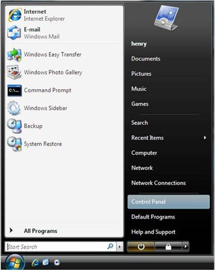
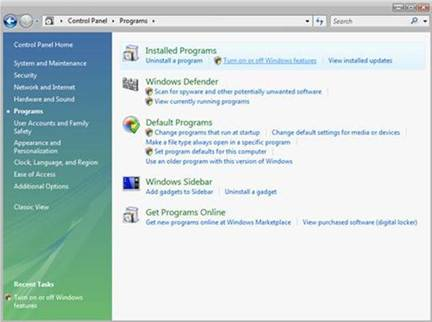
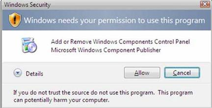
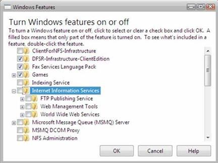
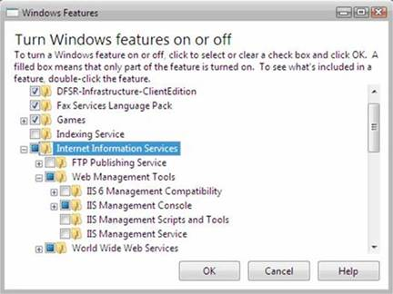
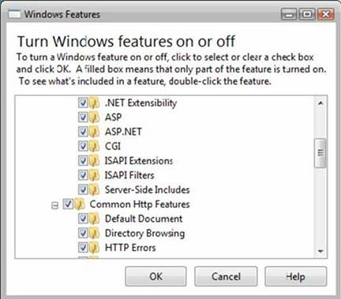
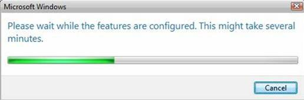
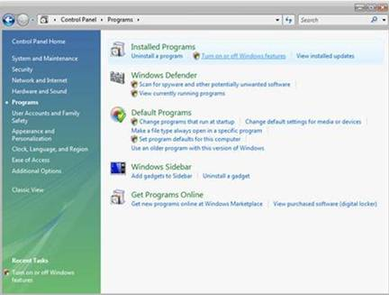
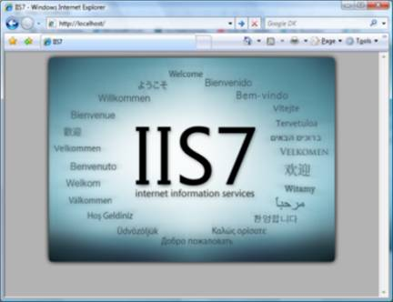

Installing Internet Information Services (IIS)
IIS is not by default installed on all computers. As a result you have to manually set up IIS in your machine.
Background
Before you begin, first ensure whether the windows version supports IIS or not. Here is a list of features supported by different versions of windows.
Not all IIS features are supported on all editions of Windows. Home Basic and Starter editions include only limited basic features of IIS. To see a list of which features are supported on the edition of Windows you are using, see one of the following:
Available Role Services in IIS 7.0 (Windows Vista)
Available Web Server (IIS) Role Services in IIS 7.5 (Windows 7)
Also be sure that you have administrative user rights on the computer. By default, you do not have administrative user rights if you are logged on as a user other than the built-in administrator, even if you were added to the local Administrators group on the computer (this is a new security feature in Windows Server 2008 called Local User Administrator). Log on either to the built-in administrator account, or explicitly invoke applications as the built-in administrator by using the run as command-line tool.
Note that you can run run as /user:administrator cmd.exe so that every application you run from that command line will be elevated, eliminating the need to use the run as syntax from that command line.
Steps
1. To open the Windows Features dialog box, click Start, and then click Control Panel.

2. In the Control Panel, click Programs.

3. Click Turn Windows features on or off.

4. You may receive the Windows Security warning. Click Allow to continue. The Windows Features dialog box is displayed.

5. Expand Internet Information Services. Additional categories of IIS features are displayed. Select Internet Information Services to choose the default features for installation.

6. Expand the additional categories displayed, and select any additional features you want to install, such as Web Management Tools.

7. If you are installing IIS for evaluation purposes, you may want to select additional features to install. Select the check boxes for all IIS features you want to install, and then click OK to start installation.

8. The progress indicator appears.

9. When the installation completes, the Windows Features dialog box closes, and the Control Panel is displayed.

10. IIS is now installed with a default configuration on Windows Vista or Windows 7. To confirm that the installation succeeded, type the following URL into your browser, http://localhost.

11. Next, you can use Internet Information Services Manager to manage and configure IIS. To open IIS Manager, click Start, type inetmgr in the Search Programs and Files box, and then press ENTER.